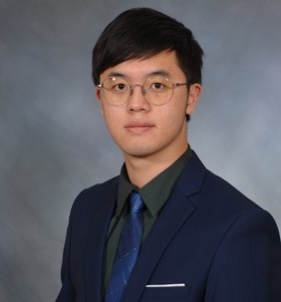
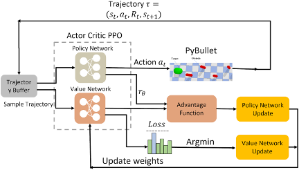

|
Yilang Liu I'm a Ph.D. candidate in Mechanical Engineering at Yale University, advised by Prof. Ian Abraham. My research focuses on robotics, optimal control, and reinforcement learning, with an emphasis on sample-based control, visual policy learning, and legged locomotion. Previously, I received my M.S. from Carnegie Mellon University and dual B.E./B.S. degrees from Chongqing University and the University of Cincinnati. I have also worked as a robotics intern at Dexmate Inc. |
 |
{kind=link}
ResearchI'm interested in robotics, optimal control, reinforcement learning, and vision-based policy learning. My research develops sample-based and data-driven methods for robot control, with applications in legged locomotion, dexterous manipulation, and autonomous exploration. |

|
Sample-Based Hybrid Mode Control: Asymptotically Optimal Switching of Algorithmic and Non-Differentiable Control Modes
Yilang Liu, Haoxiang You, Ian Abraham ICRA, 2026 project page / paper / arXiv We investigated a sample-based solution to the hybrid mode control problem across non-differentiable and algorithmic hybrid modes. |
|
Accelerating Visual-Policy Learning through Parallel Differentiable Simulation
Haoxiang You, Yilang Liu, Ian Abraham NeurIPS (Spotlight), 2025 project page / paper / arXiv / Code We proposed a computationally efficient algorithm for visual policy learning that leverages differentiable simulation and first-order analytical policy gradients. |
|
|
 |
An energy-saving snake locomotion gait policy obtained using deep reinforcement learning
Yilang Liu, Amir Barati Farimani Journal of Mechanisms and Robotics, 2023 paper / arXiv Developed a snake locomotion gait policy for energy-efficient control via deep reinforcement learning |
|
Feel free to steal this website's source code. Do not scrape the HTML from this page itself, as it includes analytics tags that you do not want on your own website — use the github code instead. Also, consider using Leonid Keselman's Jekyll fork of this page. |